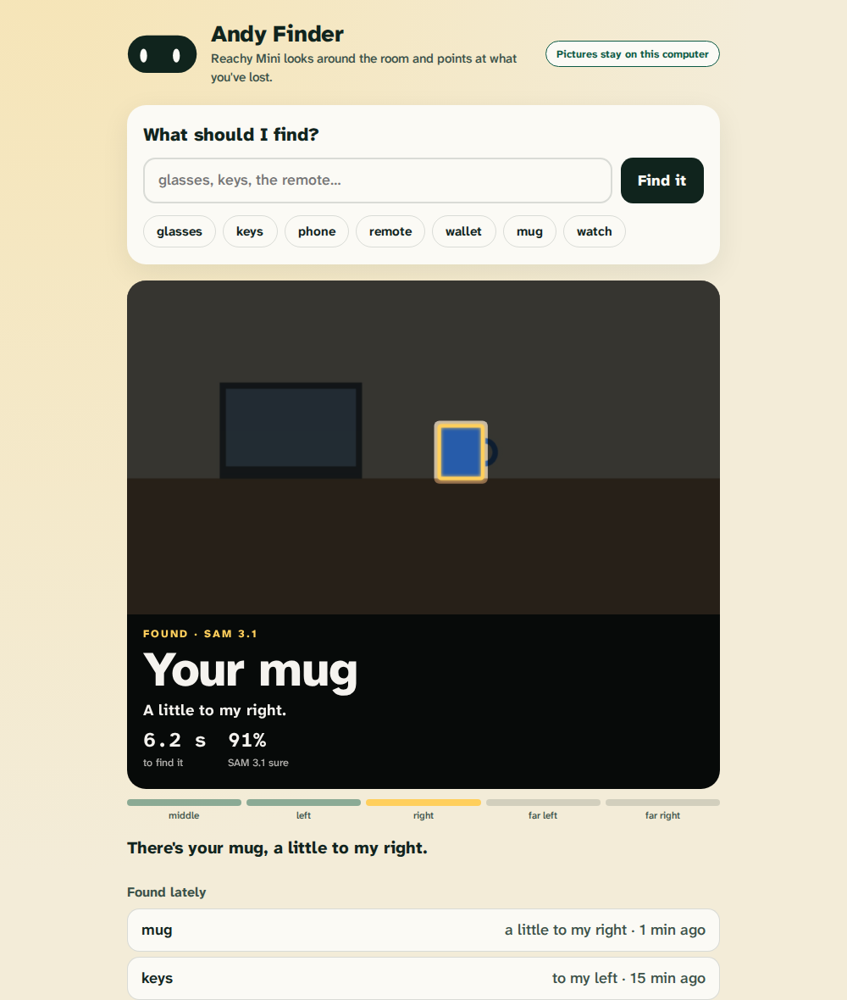

Andy Finder
Tell your Reachy Mini what you've lost. It looks around the room, finds it with Meta's SAM 3.1, turns to it and nods, and shows you what it saw.

- Tap and it looks. Glasses, keys, phone, remote, wallet, mug, watch, or type any thing.
- See what it sees. Each look live, every candidate SAM 3.1 outlined, five views lighting up as it covers the room.
- The find, revealed. A spotlight on the thing, which way it is, how long it took, how sure SAM 3.1 was.
- Honest when it can't. It shakes its head and says it may be somewhere it can't look.
Where the camera pictures go
- On your computer, if SAM 3.1 runs there (with an NVIDIA GPU; see the HeyAndy repository).
- Otherwise Meta's Model API, with your
MODEL_API_KEY: one picture per look goes to Meta. The app's page always says which, and shows a picture only while it looks and for two minutes after a find, never saved.
Install it from the Reachy Mini dashboard: Applications, Discover Apps. Part of HeyAndy, built for Meta's Global AI Developer Hackathon.